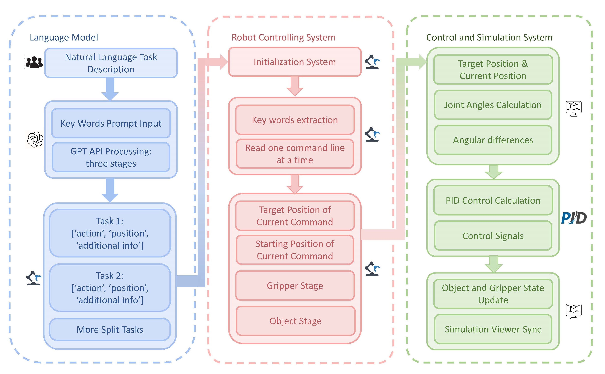
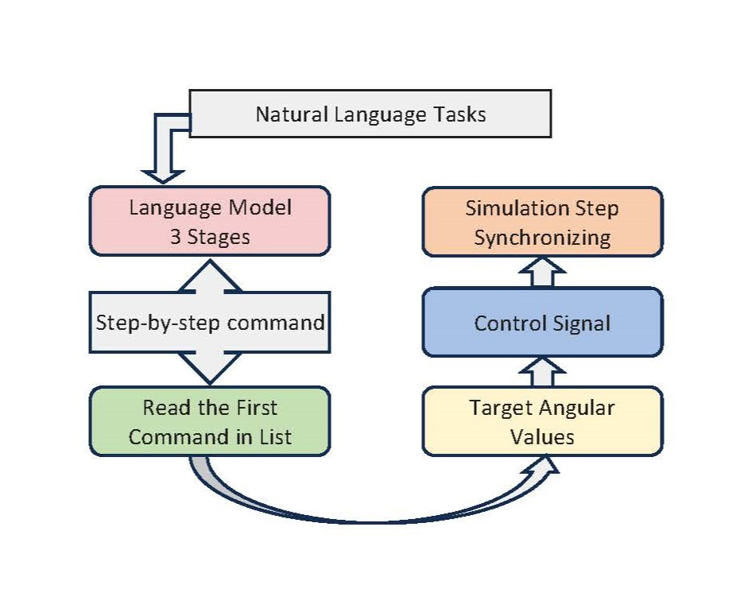
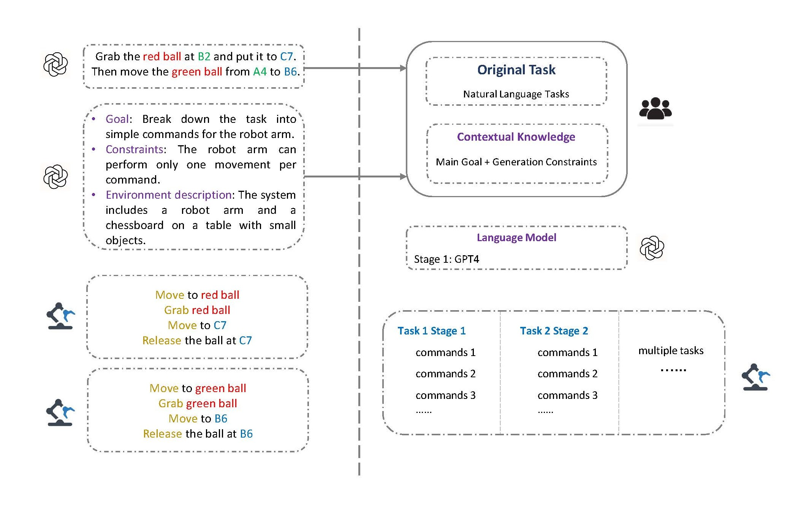
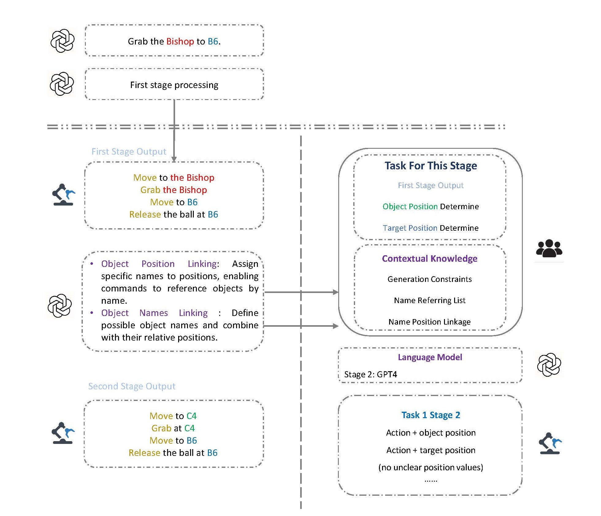
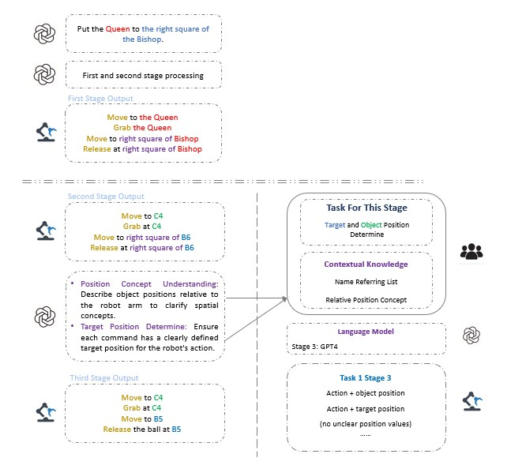
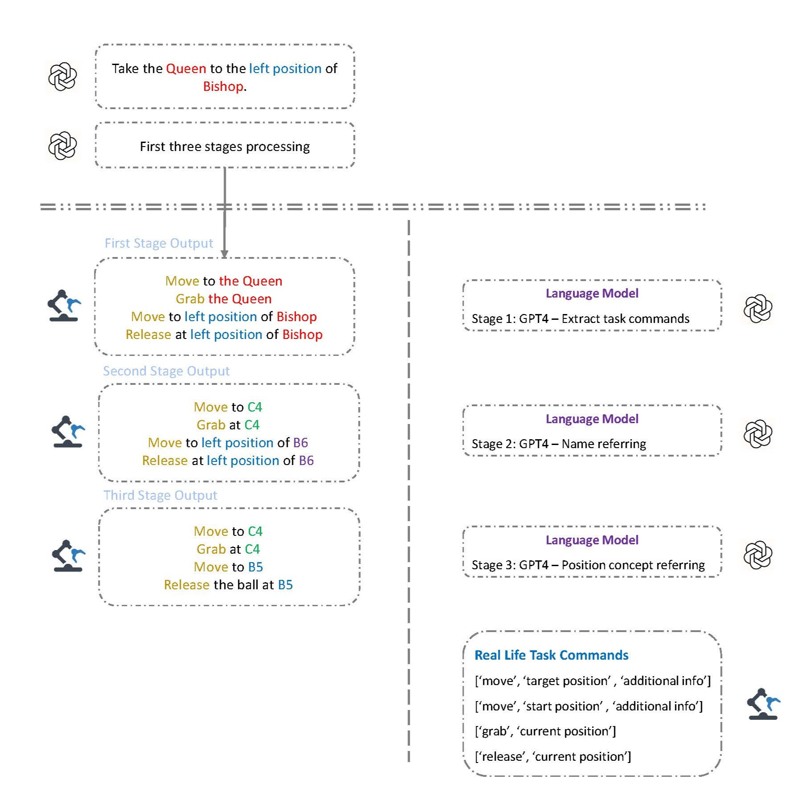

本项目结构如下图所示：
该项目分为两个部分：硬件部分和软件部分。硬件部分负责机械臂的控制，而软件部分使用大语言模型（LLM）生成指令，并将其发送给机械臂进行控制。
我们使用 OpenAI 的 GPT-4 生成机械臂的控制指令。整个语言模型的处理流程如下：
该阶段将复杂的自然语言指令拆分成多个小任务。
消除指令中的名称歧义，例如在以下示例中，“queen”指的是 B6 位置上的棋子。
解析并消除指令中的模糊位置描述，例如“B6 右侧的格子”指的是 B5。
该阶段用于检查指令的逻辑一致性和整体合理性。

git clone https://github.com/zniihgnexy/niryo_project.git
cd niryo_project
mamba env create -f mamba_mujoco_base.yml
conda activate mujoco
pip install -r requirements.txt
运行以下脚本以进行单指令和多指令的模拟：
python main_simulation.py
python main_simulation_multi.py
输入命令：“将皇后移动到 C2”。机器人会将小绿球（位于 B6 的皇后）移动到 C2。
单指令模拟视频输入命令：“将皇后移动到最远的格子，并将兵移动到对角格子”。机器人会将皇后（B6 的球）移动到 C6，并将兵（B3 的球）移动到 C2。
多指令模拟视频本实验基于 OpenAI 的 GPT-4 语言模型，因此需要 API Key。请在 llmAPI/api.py 文件中设置您的 API Key（可在 OpenAI API Key 页面 申请）。
目前，API 配置文件尚未上传。
项目目录如下：
niryo_project/
├── figures/ # 项目图片
├── llmAPI/ # GPT-4 API 配置
├── scripts/ # 主要代码文件
├── main_simulation.py # 单指令模拟脚本
├── main_simulation_multi.py # 多指令模拟脚本
├── requirements.txt # 依赖项
├── mamba_mujoco_base.yml # 环境配置
├── README.md # 项目说明